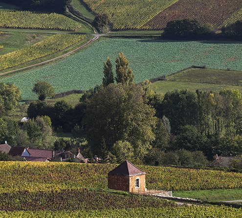

Vignoble · Cave · Vins · Terroir
Galerie Photos



Adresse
Le Bourg
71260 Cruzille
Mâconnais, Bourgogne
Téléphone
+33 (0)3 85 33 29 74
+33 (0)3 85 34 31 53
Email
domaine.guillotbroux
@wanadoo.fr
Caveau — Horaires
Lun–Ven
8h30–12h · 14h–18h
Sam–Dim sur RDV